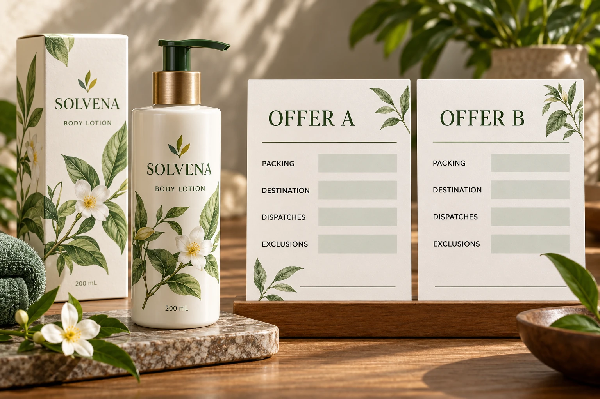

Define the delivery endpoint
Write the receiving location clearly enough for a supplier to quote the intended route. Include the country, relevant address information and receiving contact requirements through the appropriate private purchasing channel. An article or public comment is not the place to disclose a confidential delivery address.
Explain whether the project needs one shipment or several, and whether the labels go to the brand, warehouse or filling contractor. Identify any site instructions that affect packing or acceptance. A shipment described only as UK delivery does not necessarily represent two separately scheduled receipts.
The YT Labels shipping page says method and timing depend on destination, quantity and package weight. It provides a starting point for a project discussion, rather than a complete order-specific delivery commitment.
Preserve the labels being compared
Confirm that both offers price the same artwork versions, quantities by component, construction, finish and supply format. A delivery comparison is unhelpful if one price also assumes a different label material or a smaller order.
Keep any sample, proofing, tooling or production charges visible in their own rows. Do not hide those differences inside an estimated freight adjustment. The buying guide provides the wider specification brief; this worksheet resolves the narrower boundary between the quoted supply and the buyer's receiving requirement.
Use the supplier's actual wording alongside your normalized description. If an item says standard packing, ask what that means for this job. Do not substitute the packing arrangement from a previous order without confirmation.
Separate included, excluded and unresolved
These three states deserve different entries. Included means the written offer covers the specified item. Excluded means the offer explicitly leaves it outside. Unresolved means the information has not yet been established.
For example, an offer that does not mention individual carton identification is unresolved on that requirement. Calling it included creates a promise the supplier did not make. Calling it excluded and adding an invented charge can make the offer appear worse without evidence.
Ask for clarification where the difference could change the decision. Not every minor packaging detail needs another quotation round, but the actual destinations, dispatch arrangement and critical identification requirements should be answerable before release.
Build a scope bridge between the offers
Use one requirement column and separate responses for each supplier. Keep the quoted currency and validity conditions attached to the total. If purchasing uses a currency conversion for internal comparison, record its date and source separately; it is not the supplier's revised price.
| Requirement | Record from each offer | Follow-up if unclear |
|---|---|---|
| Label specification | Artwork, count, construction and format | Resolve a product difference first |
| Packing | Roll protection, separation and identification | Ask what the proposed packing includes |
| Destination | Intended receiving point or points | Obtain a quote for the actual route |
| Dispatch pattern | One delivery or defined releases | Clarify additional handling and charges |
| Transport scope | Supplier's named arrangement and limitations | Ask which stages are covered |
| Other charges | Explicit inclusions and exclusions | Obtain a written response rather than an estimate |
| Commercial basis | Currency, validity and relevant terms | Preserve the original conditions |
| Remaining gap | Unknown item and decision owner | Mark the comparison provisional |
Start by matching product scope. Enter the original responses, flag gaps and send one focused clarification request. Update the comparison only when the response identifies the revised scope and any revised amount. Retain the earlier version so a colleague can explain why the total changed.
If a trade term is proposed, have the responsible purchasing or logistics party confirm the named version, location and meaning for the transaction. This guide does not assign legal obligations, determine tax treatment or interpret customs requirements for four countries.

Judge the useful difference
In a hypothetical project, the filling site can receive all versions together and store them appropriately. A single acknowledged shipment may meet the brief. Paying for separate releases would add a service the project has not shown it needs.
Another project has different receiving sites with distinct labeling dates and carton identification requirements. A proposal covering those tasks can be more useful even if its headline total is higher. The buyer should compare the complete acknowledged alternatives rather than assume all additional cost is poor value.
There is also a valid third outcome: neither offer yet answers the receiving requirement. Keep the award provisional and request the missing scope. Selecting the cheaper incomplete offer does not make its unknown items disappear.
For a cosmetic label quotation, provide the container, artwork status, quantity by design, delivery format, intended destination and dispatch pattern. State the packing or identification requirement that could change your decision. The inquiry form prepares a message; artwork and detailed schedules are sent separately by email or WhatsApp. Ask for the included scope beside the total so purchasing and receiving can evaluate the same offer.